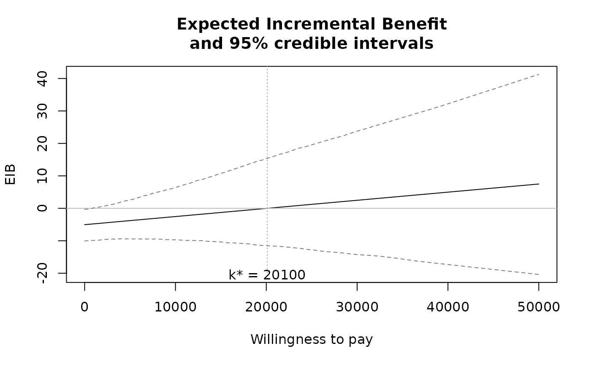
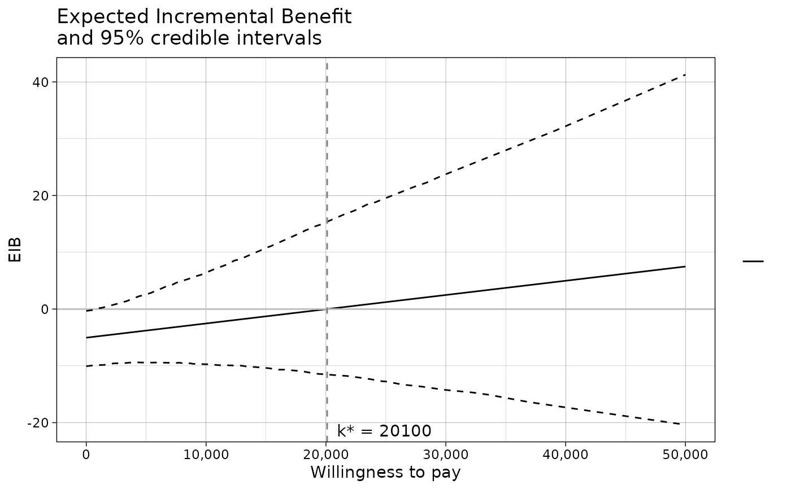
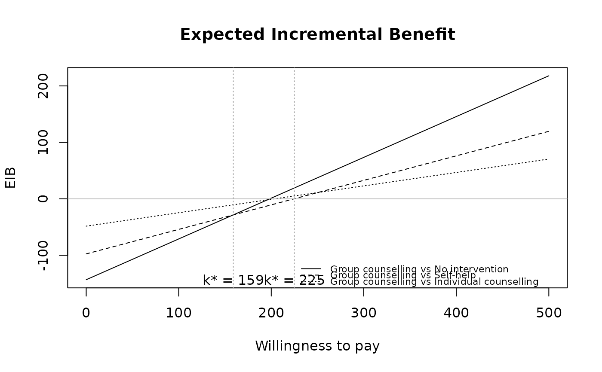

Produces a plot of the Expected Incremental Benefit (EIB) as a function of the willingness to pay.
Arguments
- he
A
bceaobject containing the results of the Bayesian modelling and the economic evaluation.- comparison
Selects the comparator, in case of more than two interventions being analysed. Default as NULL plots all the comparisons together. Any subset of the possible comparisons can be selected (e.g.,
comparison=c(1,3)orcomparison=2).- pos
Parameter to set the position of the legend (only relevant for multiple interventions, ie more than 2 interventions being compared). Can be given in form of a string
(bottom|top)(right|left)for base graphics andbottom|top|left|rightfor ggplot2. It can be a two-elements vector, which specifies the relative position on the x and y axis respectively, or alternatively it can be in form of a logical variable, withFALSEindicating to use the default position andTRUEto place it on the bottom of the plot.- size
Value (in millimetres) of the size of the willingness to pay label. Used only if
graph="ggplot2", otherwise it will be ignored with a message. If set toNA, the break-even point line(s) and label(s) are suppressed, with both base graphics and ggplot2.- plot.cri
Logical value. Should the credible intervals be plotted along with the expected incremental benefit? Default as
NULLdraws the 95\ include them for multiple comparisons. Settingplot.cri=TRUEorplot.cri=FALSEforces the function to add the intervals or not. The level of the intervals can be also set, see ... for more details.- graph
A string used to select the graphical engine to use for plotting. Should (partial-)match the three options
"base","ggplot2"or"plotly". Default value is"base". Not all plotting functions have a"plotly"implementation yet.- ...
If
graph="ggplot2"and a named theme object is supplied, it will be added to the ggplot object. Additional arguments:alphacan be used to set the CrI level whenplot.cri=TRUE, with a default value ofalpha=0.05.cri.quantilecontrols the the method of calculation of the credible intervals. The default valuecri.quantile=TRUEdefines the CrI as the interval between thealpha/2-th and1-alpha/2-th quantiles of the IB distribution. Settingcri.quantile=FALSEwill use a normal approximation on the IB distribution to calculate the intervals.line = list(color): specifies the line colour(s) - all graph types.line = list(type): specifies the line type(s) as lty numeric values - all graph types.area_include: include area under the EIB curve - plotly only.area_color: specifies the AUC curve - plotly only.
Value
- eib
If
graph="ggplot2"a ggplot object, or ifgraph="plotly"a plotly object containing the requested plot. Nothing is returned whengraph="base", the default.
The function produces a plot of the
Expected Incremental Benefit as a function of the discrete grid
approximation of the willingness to pay parameter. The break even point
(i.e. the point in which the EIB = 0, i.e. when the optimal decision changes
from one intervention to another) is also showed by default. The value k* is
the discrete grid approximation of the ICER.
References
Baio G, Dawid aP (2011). “Probabilistic sensitivity analysis in health economics.” Stat. Methods Med. Res., 1--20. ISSN 1477-0334, doi:10.1177/0962280211419832 , https://pubmed.ncbi.nlm.nih.gov/21930515/.
Baio G (2013). Bayesian Methods in Health Economics. CRC.
Examples
data(Vaccine)
# Runs the health economic evaluation using BCEA
m <- bcea(
e=eff,
c=cost, # defines the variables of
# effectiveness and cost
ref=2, # selects the 2nd row of (e, c)
# as containing the reference intervention
interventions=treats, # defines the labels to be associated
# with each intervention
Kmax=50000, # maximum value possible for the willingness
# to pay threshold; implies that k is chosen
# in a grid from the interval (0, Kmax)
plot=FALSE # plots the results
)
eib.plot(m)

eib.plot(m, graph = "ggplot2") + ggplot2::theme_linedraw()

data(Smoking)
treats <- c("No intervention", "Self-help",
"Individual counselling", "Group counselling")
m <- bcea(eff, cost, ref = 4, interventions = treats, Kmax = 500)
eib.plot(m)
